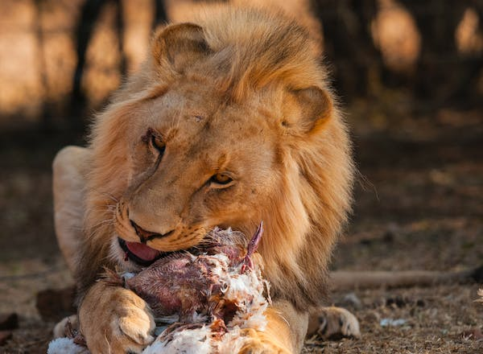

HÁBITA DEL LEON
Los leones son nativos de África subsahariana y algunas partes de la India. Su hábitat principal se encuentra en llanuras abiertas, sabanas, pastizales y zonas de arbustos. Estos entornos proporcionan a los leones espacios abiertos para cazar y presas para alimentarse, así como áreas con vegetación densa que les ofrecen refugio durante el descanso.
Aunque no construyen sus propias guaridas, los leones a menudo buscan refugio en áreas con arbustos espesos o en cuevas naturales para descansar del calor del día o para proteger a las crías. Las manadas de leones, lideradas por un macho dominante y compuestas por hembras, cachorros y otros machos jóvenes, establecen territorios que pueden variar en tamaño dependiendo de la disponibilidad de alimento y agua.


